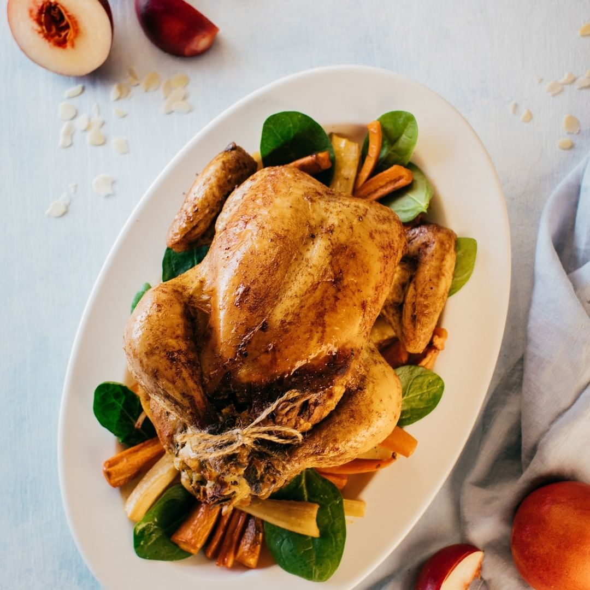

Plnené kurča podľa @lidlsk — Normy Jedál
Tip na chutný obed alebo večeru! 🥰
Pripravte si chrumkavé kurča plnené mandľovou plnkou podľa receptu našej Kuchyne Lidla🍗🐤🤗 Recept nájdete v popise 👇 Navyše, tento týždeň u nás nájdete Kura kráľovské z Welfare chovu za super cenu :)
#kuchynalidla #lidlsk #dnesvarim #plnenekurca #welfare
Dobrú chuť!
Suroviny:
1 celé kurča
1 cibuľa
3 strúčiky cesnaku
olivový olej Primadonna
morská soľ v mlynčeku Kania
čierne korenie v mlynčeku Kania
50 g masla Pilos
1 hrsť mandľových blanšírovaných lupienkov Belbake
1 stredná bageta (suchá, staršia) alebo iné biele pečivo
3 vajcia
1 hrsť čerstvých byliniek (rozmarín, bazalka, tymian)
1 nektárinka
200 ml bieleho suchého vína
200 ml vody
1 zväzok mrkvy
1 zväzok petržlenu
1 hrsť mladého špenátu
Postup:
Cibuľu a cesnak nasekáme na drobno a restujeme na rozohriatej panvici s olejom. Ochutíme soľou a čiernym korením. Tesne pred dokončením pridáme maslo a necháme vychladnúť. Na druhej panvici krátko opečieme mandle (na sucho) a necháme vychladnúť. Staršiu bagetu nakrájame na menšie kúsky.
Tip: Ak máme len čerstvé pečivo, krátko ho opečieme na suchej panvici.
V miske ručne vyšľaháme vajíčka. Z rozmarínu odstránime drevnatú stonku a spolu s ostatnými bylinkami nasekáme na drobno. K vajíčkam postupne primiešame bylinky, bagetu, mandle, cibuľový základ a na kocky nakrájanú nektárinku. Umyté a osušené kurča naplníme plnkou a stehná zviažeme špagátom. Kurča preložíme na pekáč, podlejeme vínom a vodou, osolíme, okoreníme a pokvapkáme olejom. Pečieme v rúre vyhriatej na 180 °C asi 90 minút. Kurča počas pečenia polievame výpekom. Očistenú koreňovú zeleninu nakrájame na väčšie hranolčeky, pokvapkáme olejom, osolíme a okoreníme. Približne v polovici času pečenia ju pridáme do pekáča.
Servírovanie:
Kurča podávame preliate výpekom, s pečenou koreňovou zeleninou a mladým špenátom.